Application Database Schema
The dashboard uses PostgreSQL with Drizzle ORM. The source of truth is drizzle/schema.ts; checked-in SQL migrations live in drizzle/.

Incident response and downtime records

Threshold-generated incidents use stable SF-* platform classifications. A vendor diagnostic code is stored as supplied when available. The engineer role provides technician assignment and resolution permissions; downtime is explicitly confirmed by the assigned engineer or administrator. A lost device connection does not automatically prove a factory outage. Existing records inferred by migration 0010 need operational review before use in downtime KPIs. Mean downtime-to-resolution uses only records with both downtime and resolution timestamps.
| Table | Purpose |
|---|---|
| users | Local identity, bcrypt password hash in password, role, and sign-in timestamps. Never expose the hash in API responses. |
| system_settings | Durable application-wide settings changed by administrators. demo_data_enabled controls whether demo rows are included; replicas refresh it without requiring a deployment. |
| devices | Connectivity devices. New registrations use enum type gateway or edge_device; legacy sensor/actuator/controller values remain readable. Includes status, location, firmware, and simulator marker. Migration 0015_melted_dragon_lord adds edge_device. |
| assets | Equipment identity, manufacturer name/designation, separate required postal fields, article and order codes, optional serial/rated values, lifecycle, current AAS JSON, monotonic AAS revision, and simulator marker. |
| asset_devices | Asset-to-gateway protocol, endpoint, and tag/register mappings. Store credentials on the edge gateway, not in mappings. |
| asset_lifecycle_events | Actor, transition, timestamp, and engineering note audit history. |
| asset_versions | Append-only AAS snapshots keyed by asset and revision, with change note, actor, and SHA-256 integrity digest. Migration baseline rows have no digest because prior revisions were not recorded. |
| login_rate_limits | Hashed IP/email identifiers, fixed-window counters, and expiration timestamps shared across application replicas. |
| sensor_readings | Nullable measurements, AAS asset attribution, named signals, Unix epoch millisecond timestamps, and a unique ingestion digest for retry deduplication. Indexes cover asset/date and device/date queries. |
| alerts | Stable platform/vendor error code, severity/status, metric observation, acknowledging actor/time, assigned engineer/time, confirmed downtime start, resolving actor/time, and lifecycle timestamps. Per-source transaction locks deduplicate threshold incidents by device/asset/metric; query indexes cover status/date and assignee/status. |
| alert_thresholds | Enabled per-device warning and critical bands used to classify telemetry into incidents. |
| firmware_versions, ota_deployments | Firmware catalog metadata and legacy rollout rows. OTA is disabled; a rollout row is not proof that a device downloaded, verified, installed, or booted a release. |
Connection and lifecycle ids are application-level relationships, not database-enforced foreign keys in the current schema. Oracle-hosted BaSyx owns separate storage in the Aiven basyx PostgreSQL database; it is not part of the Drizzle application schema. Demo rows are marked isDemo; startup seeding remains conservative when live assets exist, while an explicit admin toggle can seed and reveal isolated demo records alongside them.
Review migration SQL before applying changes. Set DATABASE_URL to the intended database before running pnpm db:migrate. pnpm e2e uses its own disposable PostgreSQL container.
Durable incident notifications
Migration 0013_incident_notifications adds notification_inbox and an alert trigger. In the alert transaction, new warning/critical incidents and critical escalations notify current engineers/admins; assignment changes notify new/previous assignees and admins; resolution notifies the assigned technician/admins. Migration 0016_vengeful_victor_mancha makes the alert link nullable so the same durable queue can carry account-created welcome mail without inventing an incident. The trigger does not backfill historical incidents or emit duplicate messages on unrelated incident updates.
Each row belongs to one account, optionally links to an alert, and retains title/body, read time, email status, attempts, next attempt time, safe error summary and provider acceptance time. Foreign-key cascades remove rows when their account or associated alert is deleted. The delivery worker atomically claims due rows using a two-minute lease and retries after a crash. accepted means the provider accepted the request, not that the email reached a mailbox. Eight failed attempts become failed; an authorized owner may retry an incident message after correcting configuration. unconfigured and no_recipient remain visible for incident messages; account welcome rows are email-only and do not appear in the incident inbox.
The inbox is queryable only by its owner. Reads do not acknowledge/resolve the factory incident. Email-provider credentials, sender identity and recipient policy are runtime secrets/configuration, not editable browser notification settings. Plan retention/archive policies for both telemetry and inbox history before long-term production operation.
Migration 0014_account_email_identity adds a case-insensitive unique email index. Null emails remain allowed for legacy identity records. Existing duplicate case-folded email addresses must be reconciled by an administrator before migration. Production self-registration is closed; further accounts are created by an authenticated administrator after private first-admin bootstrap. Passwords are never included in account API responses.